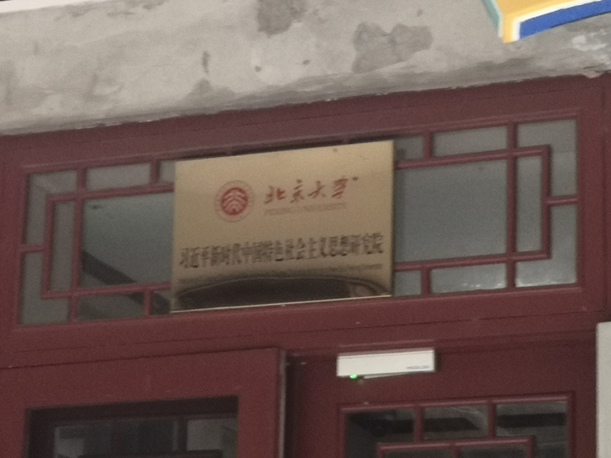
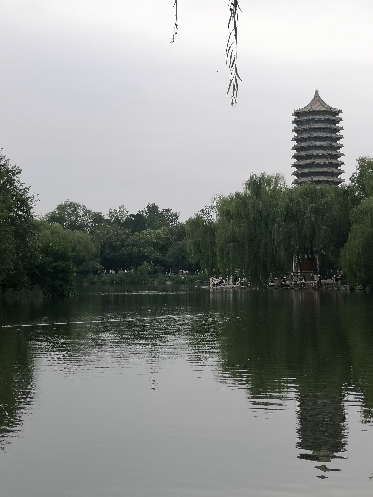
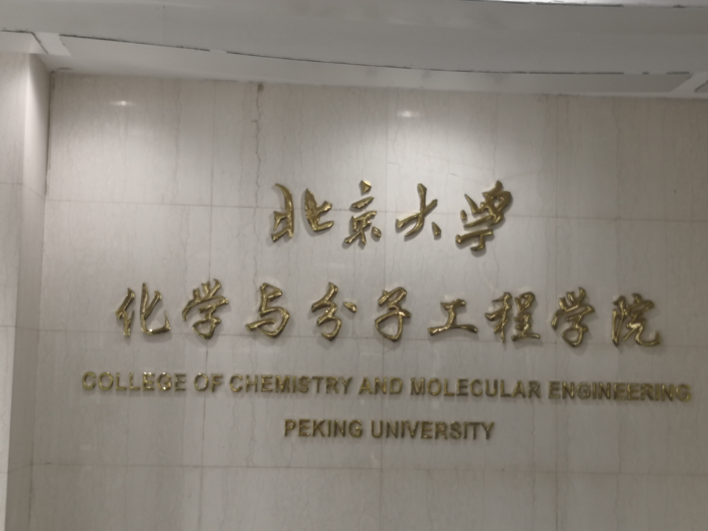
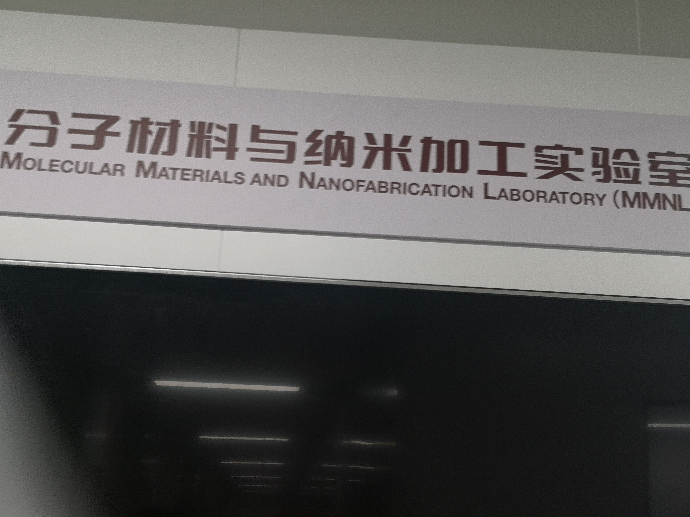
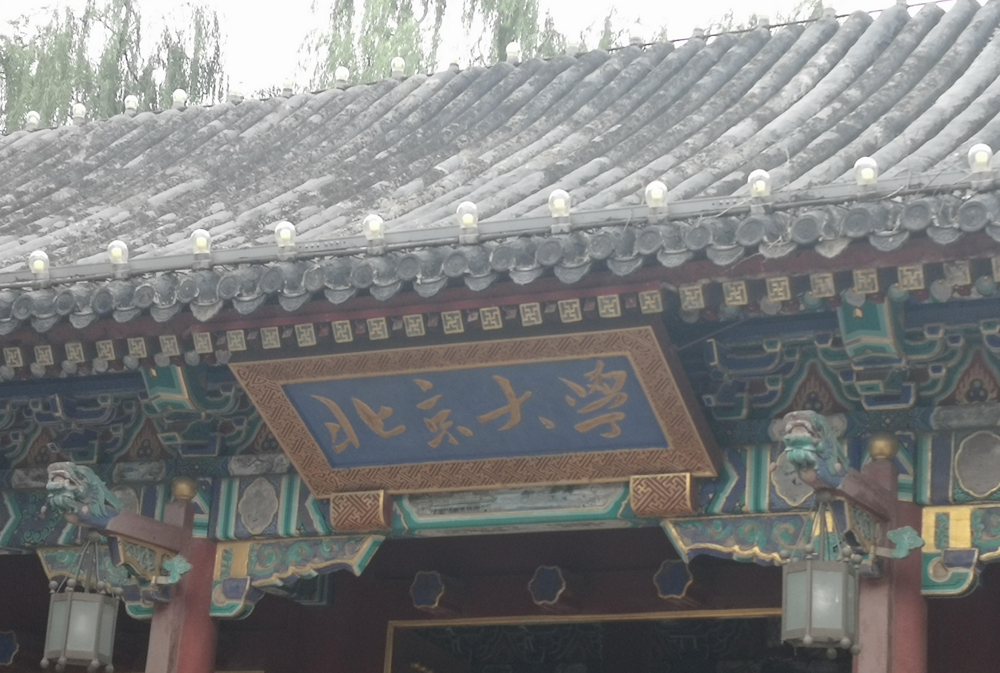
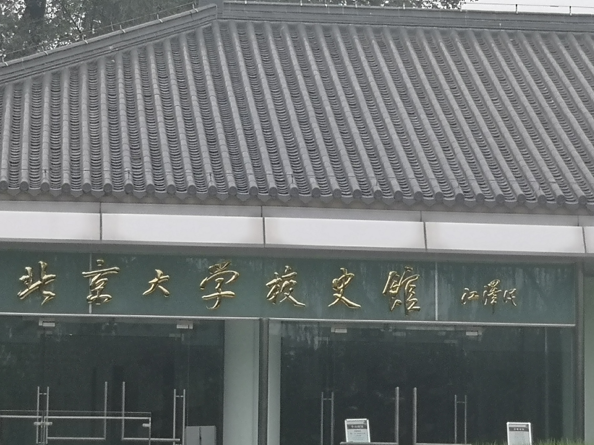
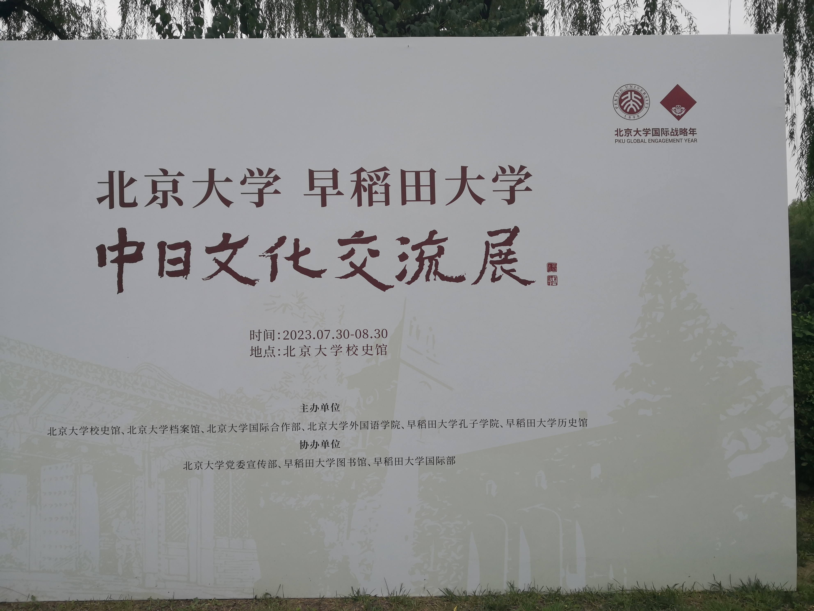
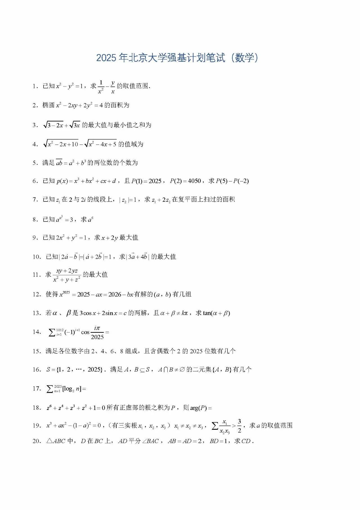
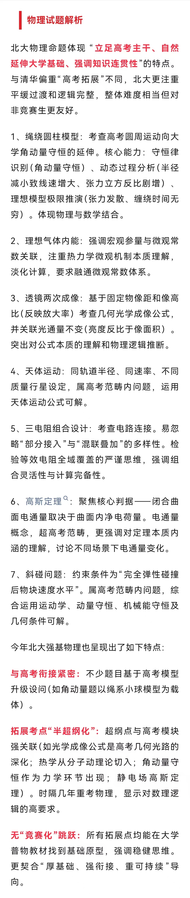
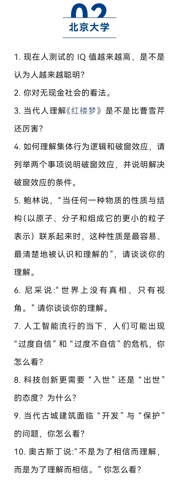

北大校园
（感谢ZZQ友情出演）
习近平新时代中国特色社会主义研究院

未名湖
未名湖黑天鹅(有彩蛋)

化学与分子工程学院

分子材料与纳米加工实验室

元素周期表墙(彩蛋*2)

北京大学创办于1898年，初名京师大学堂，是中国近现代第一所国立综合性大学，于1912年改为现名。北京大学既是中华文脉和教育传统的传承者，也标志着中国现代高等教育的开端。其创办之初也是国家最高教育行政机关，对建立中国现代学制作出重要历史贡献。
作为新文化运动的中心和五四运动的策源地，作为中国最早传播马克思主义和民主科学思想的发祥地，作为中国共产党最初的重要活动基地，北京大学为民族振兴和解放、国家建设和发展、社会文明和进步做出了突出贡献，在中国走向现代化的进程中起到了重要的先锋作用。爱国、进步、民主、科学的精神和勤奋、严谨、求实、创新的学风在这里生生不息、代代相传。






有志于服务国家重大战略需求且综合素质优秀或基础学科拔尖的学生。
对强基计划学生建立动态进出机制，对符合培养要求的强基计划学生实行本研衔接培养。进入研究生阶段后，学生主要在强基计划所在基础学科专业进行培养，也可根据培养方案在高端芯片与软件、智能科技、新材料、先进制造和国家安全等关键领域以及国家人才紧缺的人文社会科学领域进行学科交叉培养。通过强基计划录取的学生入校后原则上不得转专业。
Reference: [1] 招生简章bkzs.pku.edu.cn|
专业组 |
Ⅰ组 |
Ⅱ组 |
医学组 |
|||||||||||
|
招生专业 |
数学类 |
物理学类 |
化学类 |
力学类 |
生物科学类 |
历史学类 |
考古学 |
哲学类 |
中国语言文学类 |
历史学类 |
考古学 |
哲学类 |
中国语言文学类 |
基础医学 |
考生仅可选择一个专业组进行报考，各专业组单列计划，单独排队入围及录取。
Ⅰ组中历史学类、考古学、哲学类、中国语言文学类（古文字学方向）专业只录取有志愿考生。
Reference: [1] 招生简章bkzs.pku.edu.cn4.15-4.30 网上报名
4.15-4.23 破格申请
6.07-6.10 统一高考
约6.26 公布入围名单
6.28-7.04 入围考核
约7.05 公布录取结果
· 五大学科竞赛全国决赛二等奖及以上可申请破格入围
· 按高考成绩排名，按招生计划 1:6 入围考核
· 末位同分同入围，破格入围不占用名额
· 笔试科目：Ⅰ组和医学组：数理化；Ⅱ组：语英史。
· 体育成绩不计入综合成绩
· 综合成绩 =
高考得分率 * 85 + 笔试得分率 * 10 + 面试得分率 * 5
2025年笔试共3小时，每科满分100分
数学: 单选 5分 * 20题，竞赛基础难度
物理: 不定项 5分 * 20题，竞赛基础难度
化学: 不定项 2分 * 50题，难度较大


采用群面的方式，3名考官面试5个考生。
每个考生会在第一轮抽取1道题，4min思考，2min发言。
随后还有3轮发言，但每人每轮只能发言一次。
每个人都可以对所有人的问题发表看法，可以不同意别人的观点
重点考察学生思想，类似无领导小组面试，没有自我介绍环节。

身高体重（BMI）必测
立定跳远、坐位体前屈、仰卧起坐（女）/引体向上（男）三选一
BMI、仰卧起坐/引体向上仅测试一次
立定跳远、坐位体前屈最多测两次，每次测试成绩均记录。
体测成绩不计入综合成绩
五大学科竞赛国家集训队
北京大学将组织笔试、面试
根据笔试和面试成绩等考核评价情况认定学科竞赛保送生入选资格。
入选考生原则上录取至考生学科竞赛相对应的基础学科专业。
Reference: [1] 招生简章bkzs.pku.edu.cn招生对象：热爱中国共产党、热爱社会主义祖国、身心健康、品学兼优，有数学特长，并在国内外数学专业相关学习实践活动中取得优异成绩，有志于从事数学研究的普通高中在校学生（原则上招收高中二年级以上学生）。
招生专业：“数学英才班”录取至“数学类”专业，本科学习期间不得转入其他专业。
考核方式：笔试、面试，重点考核学生的综合能力和学习潜力。在数学方面有突出表现的同学可申请免笔试。获得入选资格的考生，在所在省份进行高考补报名，高考成绩须达到当地特控线
Reference: [1] 招生简章bkzs.pku.edu.cn招生对象：身心健康、品学兼优，对物理学科怀有强烈兴趣，表现出突出的物理学潜质和特长，有志于从事物理科学研究的国内初中三年级至高中三年级。
招生计划及专业：2026年拟选拔不超过100名考生，录取至北京大学“物理学类”专业就读。通过本计划录取的考生入校后不得在本科阶段转入其他专业。
选拔程序：初审后将进行三轮测试，包括学科基础能力测试、学科专业能力测试、面试和体质测试。据此确定“物理卓越营”入营名单(物理方面有突出表现的可申请直接进入)。之后考生到北京大学参加3个月左右的“物理卓越营”，通过理论、实验课程学习和大学适应性考察等进行综合评价，并确定录取名单。获得录取资格的国内学生无需参加高考
Reference: [1] 招生简章bkzs.pku.edu.cn面向 边远、贫困、民族等地区县（含县级市）及县以下高中勤奋好学、成绩优良的农村学生
面向 教育部批准的具有推荐外语类保送生资格的外国语中学学生
面向 具有国家一级运动员（含）以上技术等级称号的考生
空军、海军招飞要求
Thank you for your listening!